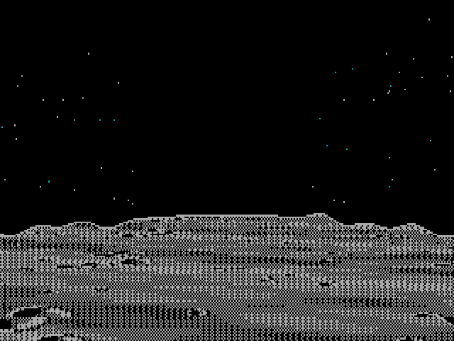
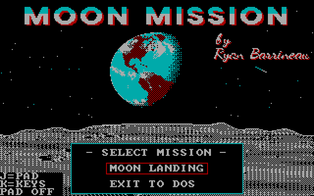
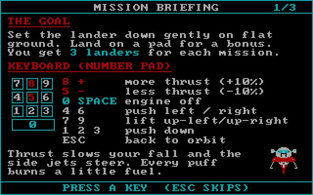
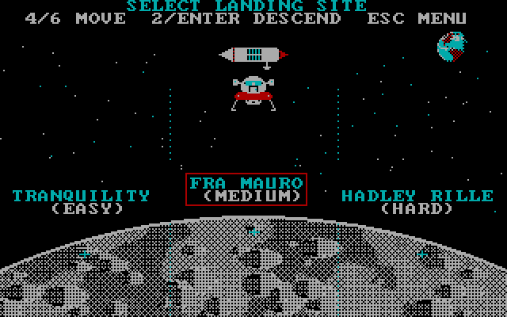
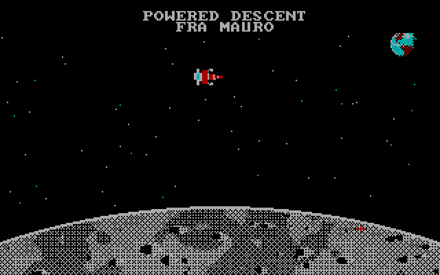
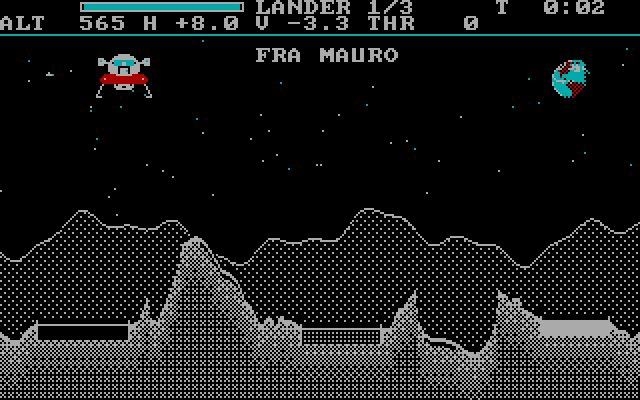
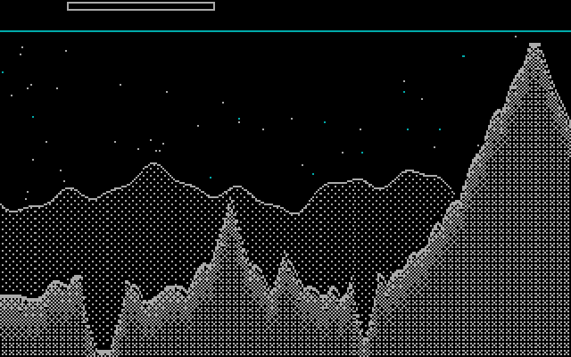
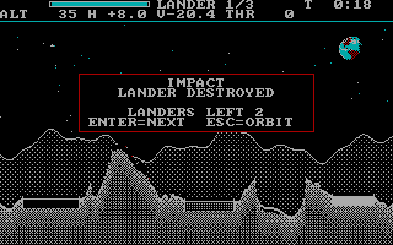
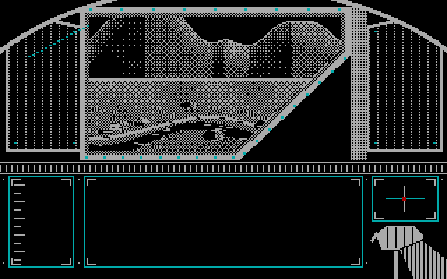

RYAN BARRINEAU'S

Land the lunar module on the Moon. Pick a site from orbit, ride the braking burn down, then fly the lander onto a pad with the main engine and the side jets. A GW-BASIC game for the IBM PC/XT and compatibles with CGA graphics, first written for a VTech Laser XT.
Drift over the Moon and choose Tranquility Base, Fra Mauro or Hadley Rille: easy, medium or hard.
Throttle the main engine and steer with the side jets. Watch your speed and your fuel, and find level ground.
A safe landing replays the last seconds of your own descent out of the commander's window.
Narrow pads pay up to ten times. The top ten scores are saved on your START disk.








| FLOPPY\START.IMG | The START disk: title, high scores, mission menu |
| FLOPPY\LANDING.IMG | The LUNAR LANDING disk: the Moon Landing mission |
| MOON\ | Every game file in one folder, for a hard disk or DOSBox |
| README.TXT | The full player's guide |
The images are plain 360K floppy images. Write them to real floppies with a tool such as WinImage, dd or Greaseweazle, or load them on a Gotek.
A:
GOOne drive? Use A: for both; the game tells you when to swap. Leave START's write-protect tab off so high scores can be saved.
Run MAKEBOOT once from DOS. It puts your DOS, COMMAND.COM and GW-BASIC on the START disk, so it boots right into the game:
B:MAKEBOOT B: C:\DOS\GWBASIC.EXEThe first part is the START disk's drive, the second is where your GWBASIC.EXE is. If SYS says there's no room, format a blank disk with FORMAT B: /S, copy START onto it and run MAKEBOOT there.
Copy the MOON folder to your hard disk and put GWBASIC.EXE in it, then:
CD \MOON
GOIn DOSBox, set machine=cga and about cycles=300 for real XT speed, then:
MOUNT C C:\GAMES
C:
CD \MOON
GO| 8 or + | More main engine (+10%) |
| 5 or - | Less main engine (-10%) |
| 0 or Space | Engine off |
| 4 6 | Push left / right |
| 7 9 | Lift up-left / up-right |
| 1 2 3 | Push down |
| Esc | Back to orbit |
The arrow keys work too. In orbit, 4 and 6 drift left and right and 2 or Enter descends. A gameport joystick or gamepad works as well: press J on the title screen to set it up, and answer Y to Hold A to burn if you want the engine to fire only while A is held.
| ALT | Height above the ground |
| H | Sideways speed: +1.5 means moving right |
| V | Up/down speed: -3.2 means moving down |
| THR | Main engine power, in percent |
| Fuel | The bar at the top left |
(soft landing + time bonus) x pad x lander used
| Soft landing | Up to 500, less for speed at touchdown |
| Time bonus | 2000, less 50 for every second |
| Pad | x2 to x10; the narrowest pads pay most. Off a pad, x1 |
| Lander used | 1st full score, 2nd half, 3rd a quarter |
| Site | Level | Fuel | Pads |
|---|---|---|---|
| Tranquility Base Apollo 11. Flat sea, slow drift | EASY | 800 | x2 x3 x5 |
| Fra Mauro Apollo 14. Hills and boulders | MEDIUM | 700 | x3 x5 x7 |
| Hadley Rille Apollo 15. Mountains, fast drift | HARD | 650 | x4 x7 x10 |